Next: About this document ...
Scaling models and data for solving large sparse
linear systems: a comparison of methods
Cedric Doucet
Cedrat SA 15, Chemin de Malacher 38240 Meylan
cedric.doucet@cedrat.com
I. Charpentier, J.-L. Coulomb, C. Guerin
As industrial problems may involve different kinds of
physical parameters and different types of coupled
equations, ill-conditioned sparse linear systems may arise
from the discretization method. Let 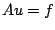 be a nonsingular
sparse linear system where
 ,
and
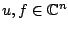. If the spectral condition number
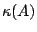 is too far from one, direct solvers can lack of
accuracy and iterative methods can fail to converge. An
economical way of avoiding these difficulties is to find two
diagonal matrices 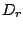 and such that
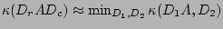.
Then,
the solving process becomes
,
and
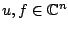. If the spectral condition number
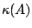 is too far from one, direct solvers can lack of
accuracy and iterative methods can fail to converge. An
economical way of avoiding these difficulties is to find two
diagonal matrices 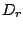 and such that
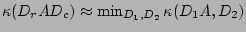.
Then,
the solving process becomes
- compute
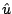 such that
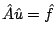
- compute
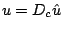
where
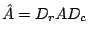
and
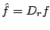.
Numerical properties of 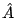 differ
according to the scaling method; it can have normalized
rows/columns [2] or it can be approximately doubly
stochastic [3]. Other methods make the matrix have arbitrary
row/column sums [1]. In this paper, we propose to make clear
the interests of scaling corrections for supernodal and
multifrontal direct solvers and for preconditioned iterative
methods on industrial applications based on Maxwell
equations (coupled problems, nonlinear materials, moving
structures, transient problems) and discretized by means of
nodal or edge finite elements.
[1] N. Linial, A. Samorodnitsky,
A. Wigderson, A deterministic strongly polynomial
algorithm for matrix scaling and approximate permanents,
Combinatorica 20 (200) 531-544.
[2] O. E. Livine, G. H. Golub,
Scaling by Binormalization.
[3] D. Ruiz, A Scaling Algorithm to Equilibrate
Both Rows and Columns Norms in Matrices, RAL-TR-2001-034.
Next: About this document ...
Bruce Fast
2006-03-11